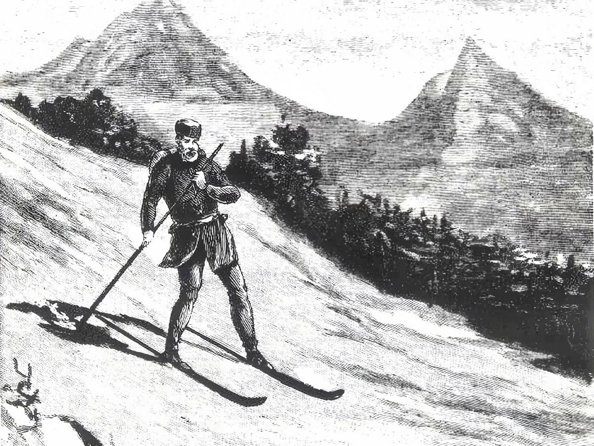

Начало истории горнолыжных соревнований было положено ещё в XVIII веке, когда норвежцы собрались в месте под названием Телемарк, чтобы спуститься по лесному склону, объезжая деревья. Они даже разыграли несколько призов среди тех, кто не упал и не сломал лыжи. С тех времён появилось слово «слалом», что означает «след на снегу», а «телемарк» выделяется как отдельный стиль и дисциплина горнолыжного спорта.
Современные же горнолыжные соревнования начали проводиться в Австрии с 1905 года. В то время результат определялся по максимальному количеству поворотов на определённом отрезке склона. Можно считать это прообразом специального слалома.
В 1911 году в Швейцарских Альпах были проведены первые соревнования по скоростному спуску. Здесь уже стояла задача первым прийти к финишу. Стартовали одновременно 10 человек, а склон был абсолютно неподготовленным. Представьте, какое зрелище!
Международная федерация лыжного спорта (FIS, ФИС) признала горнолыжный спорт как самостоятельный вид только к 1930 году. В 1931 году в Швейцарии провели первый чемпионат мира, в котором спортсмены соревновались в слаломе и скоростном спуске. Победу в обеих дисциплинах одержали швейцарские спортсмены, а первое серебро отправилось в Австрию.
Далее появился зачёт в комбинации — первые награды в данной дисциплине разыграли на Олимпийских играх 1936 года в Гармиш-Партенкирхене, Германия.
В 1950 году программа чемпионата мира пополняется четвёртой дисциплиной — гигантским слаломом (слалом-гигант). По перепадам высот, длине трассы и количеству поворотов он занимает своё место между слаломом и скоростным спуском.
А в 1988 году появляется супергигант, который с точки зрения техники, организации соревнований и требований к трассам занял промежуточное положение между скоростным спуском и гигантским слаломом.
Также существуют параллельные командные соревнования, которые были включены в программу Олимпийских игр 2018 года в Пхёнчхане.
История появления фристайла берет свое начало с середины 19 века, когда в горах Норвегии в 1860 году, был совершен первый прыжок на лыжах с элементом акробатики. Долгое время элементы фристайла демонстрировались на зимних курортах с целью привлечения туристов. Доктор Фриц Руэль, горнолыжник и альпинист, в 1926 году выпустил книгу «Новые возможности лыж», которая описывала, такую спортивную дисциплину, как лыжный балет.
В 50-х годах происходит формирование фристайла, как отдельного вида спорта. Базовой основой становится акробатика и горные лыжи. Отцом фристайла принято называть Стейна Эриксена, профессионального горнолыжника, победителя Олимпиад и чемпионатов мира.
В 1966 году в американском курорте Аттиташ прошли первые соревнования по фристайлу. Зрителям была представлена программа, в которой оценивались техника катания и трюки, свободно выбранные спортсменами.
В 1960—1970 годах «хот-доггинг», придуманный американецем Бобом Бернсом, становится основным стилем фристайла. Большой вклад в его развитие сделали Том ЛеРой, Джон Кленденин, Уэйн Вонг. Позднее, из «хот-доггинга» выделилиcь три основные дисциплины: лыжный балет, акробатика и могул. Стоит отметить, что фристайл считается достаточно травмоопасным видом спорта. В погоне за опасными трюками, спортсмены получали травмы, известны и смертельные случаи.
В 1979 году FIS официально признает фристайл видом спорта. Вводятся жесткие требования для спортсменов, направленные на уменьшение травматизма.
В 1986 году во Франции прошел первый чемпионат мира. Новый захватывающий вид спорта с большой скоростью набирал популярность. Так в Японии, на Олимпиаде в Нагано, билеты на фристайл купить было сложнее, чем на хоккейный финал.
В 1988 году в Калгари фристайл был представлен в качестве показательной, а в 1992 году в Альбервиле официальной дисциплины зимних Олимпиад.
Сегодня, олимпийскими дисциплинами по фристайлу официально считаются: воздушная акробатика, могул, слоупстайл, ски-кросс, биг-эйр, хаф-пайп. В наши дни фристайл активно развивается, совершенствуются техники, появляются новые виды.